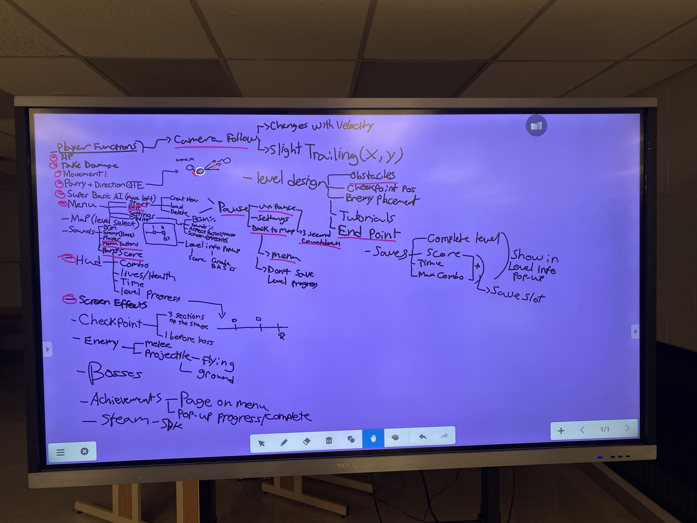
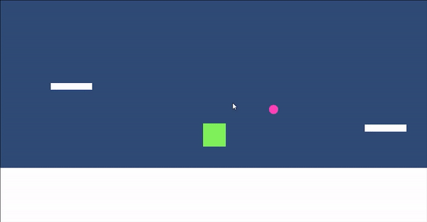

| Capstone Progress Week 4 | This week was a busy one. We started off the week by filling out a whiteboard in class with all of our Technical Design Document challenges and tasks. Seeing all of the words on the board helped us get an idea of the scope of our project and what needs to be done for the first prototype build. We highlighted the top priority tasks and divided some of them into smaller tasks. Once we were satisfied with the look of the task branch, we went over to our Jira board and added our tasks to the backlog. By the end of our 3 hours class time, we were ready to start our first official sprint.  This is where our first major issue of the week appeared. The create sprint button on our Jira board was missing. Will, James, and I spent a good amount of time searching the web for an answer, but I came across a forum saying that our Jira board type did not use sprints. I had to make a new Jira board as a scrum board instead of a regular Kanban. Once we figured this out, I moved all our backlog over to the new board. We were finally able to start the first sprint after assigning some tasks to each other. Kaleb wanted to work on the audio side of things, Pamela agreed to work on some sprites, Hyangsu was interested in the camera mechanics, Will enjoyed the AI aspect, and I decided to work on the player movement mechanics. Before working on anything, we re-visited GitHub to make sure everyone was a little familiar with it. This week, I managed to implement a first iteration of the movement. It was janky, so I decided to rework it over the weekend. I was happily surprised to see that James commented on some of my code, giving me some very helpful advice. I’m very happy with how the movement feels now. All movement is velocity based for easy physics calculations, there is variable jump height, and a bit of coyote time to allow for more forgiving jumps.  I also had a bit of time to start working on the main mechanic of the game: the parry launch. It is in a very rough state right now but I plan to work hard on it in the coming week. Finally, over the weekend I had some discussions with the Mentors for a meeting. We finally agreed to a meeting with the whole group on Wednesday. We still have a lot to do before sending out our first prototype, but I think we can do it (hopefully without too much crunch). |
|---|